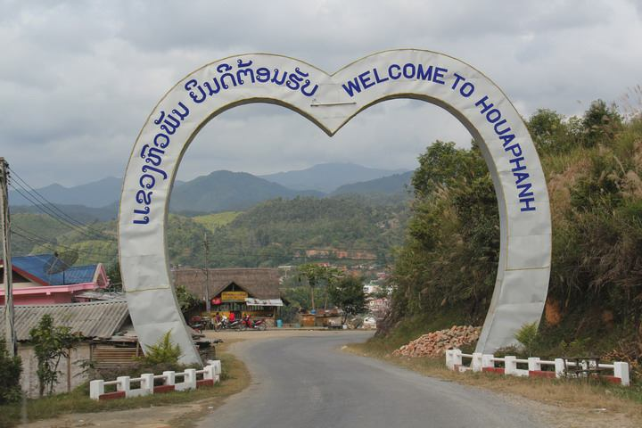

ຍິນດີຕ້ອນຮັບສູ່ແຂວງຫົວພັນ
Location ເຊີນທ່ຽວແຂວງຫົວພັນ

×

ຂໍ້ມູນ ແຂວງຫົວພັນ
ແຂວງຫົວພັນ
ຄຳຂັວນຂອງແຂວງຫົວພັນ
ງົດງາມພູຜາ ນ້ຳມ້າສ່ອງໃສ
ວຽງໄຊປະຫວັດສາດ ຜ້າໄໝຊຳໃຕ້
ຫີນຕັ້ງຫົວເມືອງ ຖິ່ນພູສາມເສົ້າ
ຄົກເຂົ້ານ້ຳລິນ ແຜ່ນດິນວິລະຊົນ
ແຂວງຫົວພັນຕັ້ງຢູ່ທາງທິດຕາເວັນອອກສຽງເໜືອຂອງປະເທດລາວ ມີເນື້ອທີ່ປະມານ 16,500
ກິໂລແມັດ ປະກອບດ້ວຍ 8 ເມືອງຄື: ເມືອງຫົວເມືອງ,ເມືອງແອດ,ເມືອງ,ເມືອງວຽງທອງ,ເມືອງວຽງໄຊ,
ເມືອງຊຳເໜືອ,ເມືອງຊຳໃຕ້ ແລະ ເມືອງຊຽງຄໍ້ ມີຈຳນວນປະຊາກອນປະມານ 322,2000 ຄົນ (ປີ ພ.ສ
2547 ) ປະຫວັດສາດຂອງແຂວງນີ້ມີຄວາມໝາຍ ເຊັ່ນ: ໃນອະດີດ ແຂວງຫົວພັນເຄີຍຕົກເປັນຫົວເມືອງ
ຂື້ນຂອງຫວຽດນາມ ແລະ ໄດ້ຖືກລວມເຂົ້າເປັນສ່ວນໜຶ່ງຂອງລາວໃນສະໄໝທີ່ຕົກເປັນອານານິຄົມຂອງ
ປະເທດຝຣັ່ງ ພູມສັນຖານຂອງແຂວງນີ້ຈະມີພູຜາສະຫລັບສັບຊ້ອນ ພື້ນທີ່ສ່ວນຫຼາຍຈະເປັນປ່າໄມ້ ອາ
ກາດຈະໜາວ ປະກອບດ້ວຍຊົນເຜົ່າຫຼາຍກວ່າ 20 ເຜົ່າ ເຊັ່ນ: ໄທຂາວ, ໄທແດງ, ໄທເໜືອ, ໄທນ້ອຍ,
ມັງ, ຂະມຸ, ນານ... ສ່ວນຫຼາຍຈະໃຊ້ພາສາຕະກູນພາສາໄທ.ສິ່ງທີ່ນ່າສົນໃຈຂອງແຂວງນີ້ຄື ເມືອງວຽງໄຊ
ໃນອະດີດເຄີຍເປັນສູນບັນຊາການໃຫຍ່ຂອງກຸ່ມຜູ້ນຳຂະບວນການປະເທດລາວ ມີຊົນເຜົ່າພື້ນເມືອງທີ່ມີ
ວັດທະນາທຳ ແລະ ແຫຼ່ງຜ້າໄໝ ອັນດັບ 1 ຂອງລາວ.